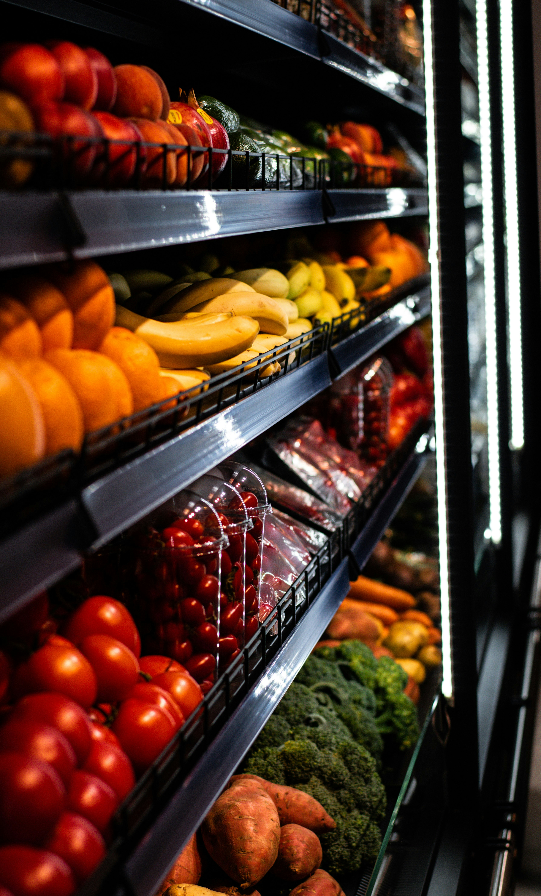

Rows of produce for sale at a grocery store. @mintolime/Unsplash
MILWAUKEE, Wis. - Grocery store closures and limited food resources across Milwaukee County are leaving some neighborhoods with far less access to food than others. These closures have disproportionately affected residents in predominantly Black areas.
An analysis of survey data collected by Health Compass Milwaukee and a list of food resources from Data You Can Use —including food pantries, independent grocery stores, grocery chains and warehouse clubs and supercenters—shows that ZIP codes with high rates of food insecurity often also have few food resources.
The analysis divides the share of residents experiencing food insecurity in 2024 by the number of food resources per 1,000 residents in each ZIP code. The resulting ratio shows how many people are struggling with food insecurity for each available food resource.
The three ZIP codes with the highest ratios—53225, 53218 and 53216—are all concentrated on Milwaukee’s northwest side. According to Data You Can Use, 78% of residents there identify as Black or African American.
Milwaukee has seen a continued pattern of major grocery stores leaving the city, with nine grocery stores closing since 2021. In 2025 and 2026, three grocery stores closed on the northwest side.
In November 2025, the Milwaukee County Board of Supervisors declared food apartheid a public emergency, identifying it as both a lack of resources and an issue of inequity, connecting it to the county’s declaration of racism as a public health crisis.
Local and state organizations have stepped up to meet the demand, including Hunger Task Force, which operates Milwaukee County’s main food bank.
In a written statement, spokesperson Kate Kazan says they have responded to the increased needs on the northwest side by channeling more support to emergency food providers as well as by investing in their Mobile Market program. Mobile Market is a grocery store on wheels that visits different communities throughout Milwaukee, providing access to fresh produce, meats, and vegetables.
Hunger Task Force is “committed to ensuring people receive consistent access to healthy foods on the day they need it and in the neighborhood they live in,” Kazan stated.
Kazan added that the organization works with elected officials and government agencies “to strengthen and improve programs that feed families in our community and elevate stories of champions to amplify the impact that policy changes have on hungry families.”
As city and county leaders work to increase access to food resources, residents on Milwaukee’s northwest side continue to bear the brunt of the impact.